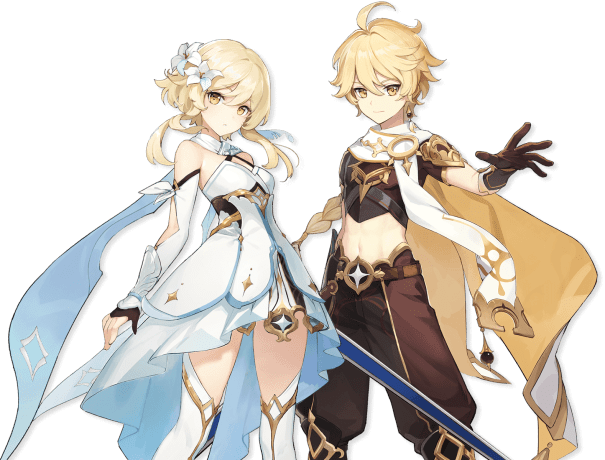

O jogo Genshin Impact é um jogo eletrônico RPG de ação gratuito desenvolvido e publicado pela HoYoVerse.O jogo apresenta um ambiente de mundo aberto de fantasia e sistema de batalha baseado em ação usando Pontos de energia elemental e troca de personagem, e usa a monetização de jogo gacha para os jogadores obterem novos personagens, armas e outros recursos.O jogo é apenas online e apresenta um modo multiplayer limitado que permite até quatro jogadores jogarem juntos.Foi lançado para Microsoft Windows, PlayStation 4, Android e iOS em 28 de setembro de 2020.O Genshin Impact também está planejado para lançamento no Nintendo Switch e PlayStation 5; a compatibilidade da edição de PlayStation 4 para de PlayStation 5 foi adicionada em 11 de novembro de 2020.
O jogador começa como um viajante de origem desconhecida que está viajando de mundo em mundo até chegarem em Teyvat (Local onde se passa o jogo), onde se deparam com uma "Deusa Desconhecida", onde os impedem de sair do mundo,e então o jogador irá decidir quem irá controlar dos irmãos (Aether e Lumine), independente da escolha, o irmão gêmeo que você não escolheu será "raptado"por essa deusa,onde você tenta a imperdir mas acaba sendo preso também.500 anos depois, você acorda, sem seus poderes e se depara com uma criatura se afogando,você a salva a pescando, seu nome é Paimon, ela se auto-intitula "A melhor Guia Aventureira de Teyvat" e está disposta a te ajudar em busca de seu/sua irmão/irmã gêmeo(a) perdido(a).
Nesse mundo chamado Teyvat, algumas pessoas escolhidas receberam uma visão - Um ornamento que dão aos seus portadores a habilidade de controlar um elemento (Pyro = fogo, Hydro = água, Cryo = gelo, Anemo = vento, Geo = pedra, Electro = eletricidade e Dendro = Plantas) dos Arcontes. As visões são concedidas a poucas pessoas de acordo com sua obsessão, seu desejo, seus sentimentos, como por exemplo a visão Pyro é dada à aqueles que tem uma paixão ardente tanto por algo ou alguém, e o que diferencia as pessoas com visões das pessoas que não tem é a força da sua obsessão, onde geralmente seus desejos ou sentimentos são muito mais fortes do que o normal, e o significado sobre as visões de forma resumida é "A Visão é um presente concedido àqueles que moram em Teyvat e são reconhecidos pelos Deuses. Eles concedem ao usuário habilidades elementares com base no elemento de sua visão dada. Diz-se que aqueles com Visões têm uma chance de ascender a Celestia e atingir a divindade. Os detentores de visões são chamados de alogenes, embora este não seja um termo amplamente conhecido."